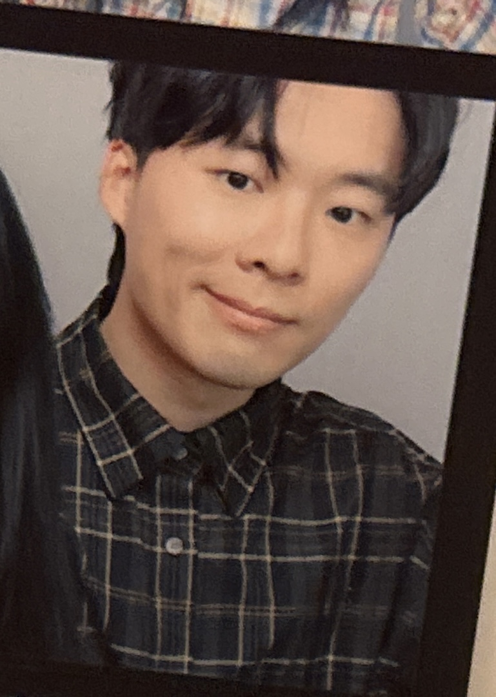
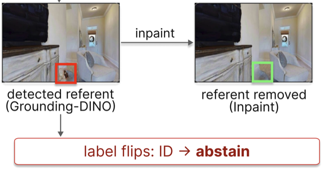
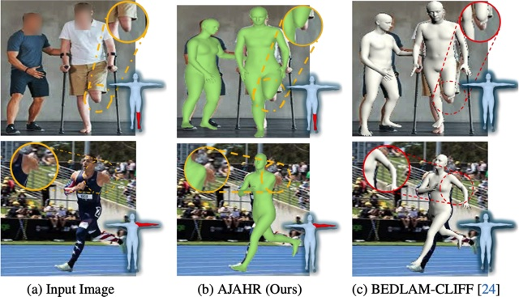
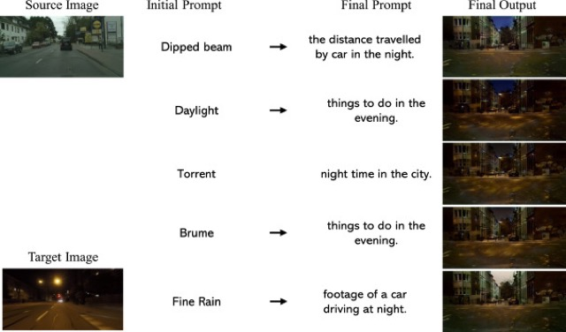
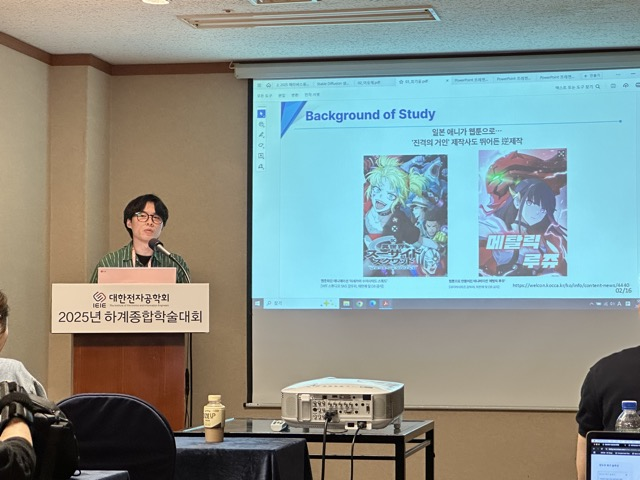
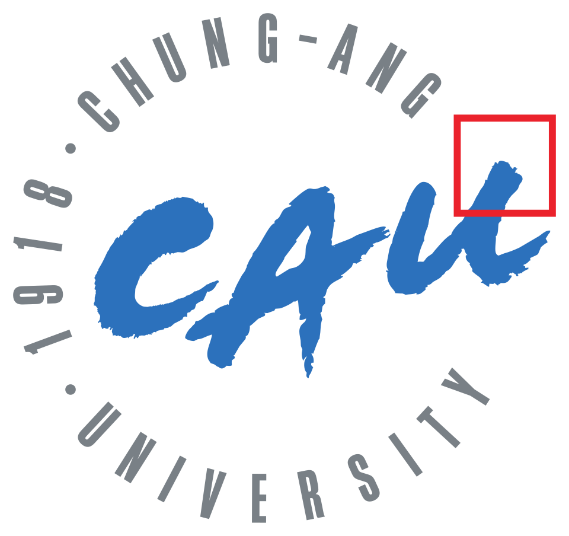
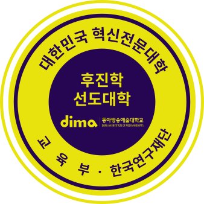

|
Giyun Choi I am a researcher at RGA Robotics. I received my M.S. in Image Engineering from Chung-Ang University, where I was advised by Prof. Jongwon Choi. My research interests include 3D human pose and mesh recovery, deepfake detection, and generative AI. Email / CV / Google Scholar / GitHub |
 |
PublicationsInternational |
|
 |
Semantic Flip: Synthetic OOD Generation for Robust Refusal in Embodied Question Answering and Spatial Localization
Dongbin Na, Chanwoo Kim, Giyun Choi, Dooyoung Hong Under review, 2026 — arXiv / project page / code |
|
 |
AJAHR: Amputated Joint Aware 3D Human Mesh Recovery
Giyun Choi*, Hyunjin Cho*, Jongwon Choi (* equal contribution) International Conference on Computer Vision (ICCV), 2025 project page / arXiv / ICCV / supplement / bibtex |
|
 |
Style Prompt Tuning for Bridging Visual Gaps in Autonomous Driving
Suyeon Cha, Giyun Choi, Minji Kwak, Jongwon Choi Engineering Applications of Artificial Intelligence (EAAI), vol. 161, 2025 paper / DOI / bibtex |
|
Domestic |
|
Super-Resolution Detection Based on Deepfake Image Manipulation Techniques and Learnable Convolutional Kernels
Giyun Choi, Sungbin Yun, Jongwon Choi Journal of the IEIE (KCI), Oct 2025 |
|
|
 |
Expansion Study of an Automatic Animation-to-Webtoon Conversion System for Applying Various Animation Styles
Giyun Choi, Chaeyun Baek, Chaewon Hong, Takhoon Kim, Gyuhyun Kim, Jongwon Choi IEIE Summer Conference, Jun 2025 — Outstanding Student Paper Award paper / bibtex |
Projects |
|
|
Provenance-based Detection of Multimodal Synthetic Content and Generator-Model Attribution (Reverse Detection)
Funded by IITP Built multimodal deepfake datasets (video, audio, text); implemented TransVCL-based video deepfake retrieval and a LoRA fine-tuned deepfake text retrieval model with FAISS. |
Mar 2025 – Nov 2025 |
|
Detection Methods for Tampering in Digital Image Files
Funded by the Supreme Prosecutors' Office Generated deepfake and super-resolution manipulation datasets with GANs, VAEs, and diffusion models; developed universal detection algorithms agnostic to the underlying generative model. |
Aug 2024 – Dec 2024 | |
|
Optimization of CAE (Computer-Aided Engineering) Simulation Techniques
Funded by Hyundai Mobis Developed an MC Dropout–based active learning algorithm for selecting optimal handle steering samples. |
Apr 2024 – Aug 2024 | |
|
Development of a User-Friendly AI Platform and Reinforcement Learning Techniques for Automatic Animation-to-Webtoon Conversion
Funded by KOCCA Built a computer-vision algorithm to automatically select optimal webtoon cuts and enhanced cut selection via ML/RL-based optimization. |
Sep 2023 – Mar 2024 |
Education
 Chung-Ang University M.S. in Image Engineering Mar 2023 – Aug 2025 · GPA 4.32/4.50 Advisor: Prof. Jongwon Choi
 Dong-Ah Institute of Media and Arts Associate Degree in Broadcast Technology Mar 2013 – Feb 2018 · GPA 3.54/4.50 |
Experience
|
|
Template adapted from Jon Barron's website. |